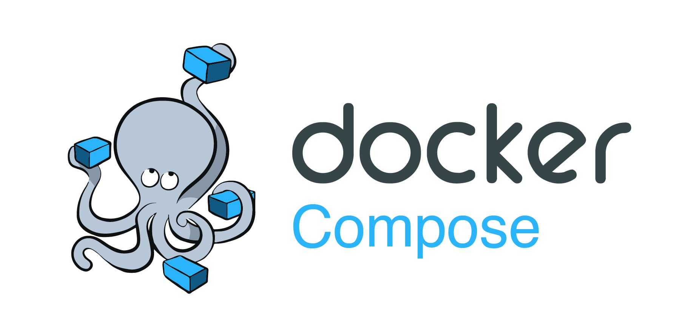
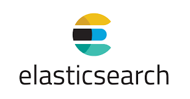
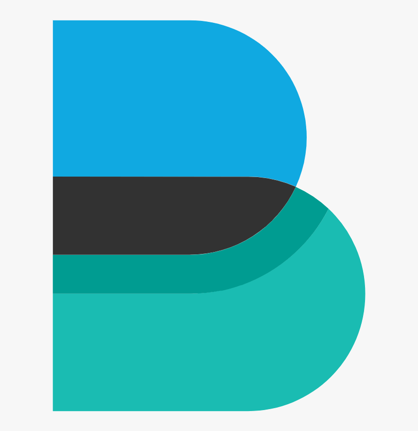

Procediment i programari utilitzat:
En nostre projecte consta de 3 màquines virtuals com he mencionat anteriorment, aquestes seran creades amb el programari gratuït VirtualBox.
Màquina 1:
La primera contindra un sistema amb Ubuntu 20.04 que tindrà instal·lat el programari de gestió de contenidors Docker Compose.
Dins aquesta primera màquina crearem 3 contenidors per a tenir cada servei de l’aula compartimentat de forma que ens facilitaria la expansió del servei, una possible futura implementació de sistemes d’alta disponibilitat i també la fàcil migració dels serveis que ens permet una eina com Docker en cas de voler canviar de maquinari en un futur.

Màquina 2:
La segona màquina serà un firewall amb router incorporat on utilitzarem el programari de codi lliure Pfsense, amb aquest també podrem configurar un DNS per si volem resoldre l’adreça web del nostre servidor Moodle des d’un client.
Màquina 3:
Finalment la tercera màquina tindrà un sistema SIEM, en aquesta tindrem el ELK Stack, una colecció de software de codi obert produït per Elastic, el Elastic Stack te quatre components principals:
-ElasticSearch: Motor de cerca i recol·lecció de dades.

-Logstash: Processador de dades dissenyat per enviar dades a ElasticSearch.
-FileBeats: Eina dedicada a adquirir i recopilar dades dels sistemes per enviar-les a ElasticSearch.

Alhora d’instal·lar el programari, és molt important controlar les versions de cadascun, d’aquesta forma evitem qualsevol tipus d’incompatibilitat entre el software que estem utilitzant, inclós el del sistema operatiu.